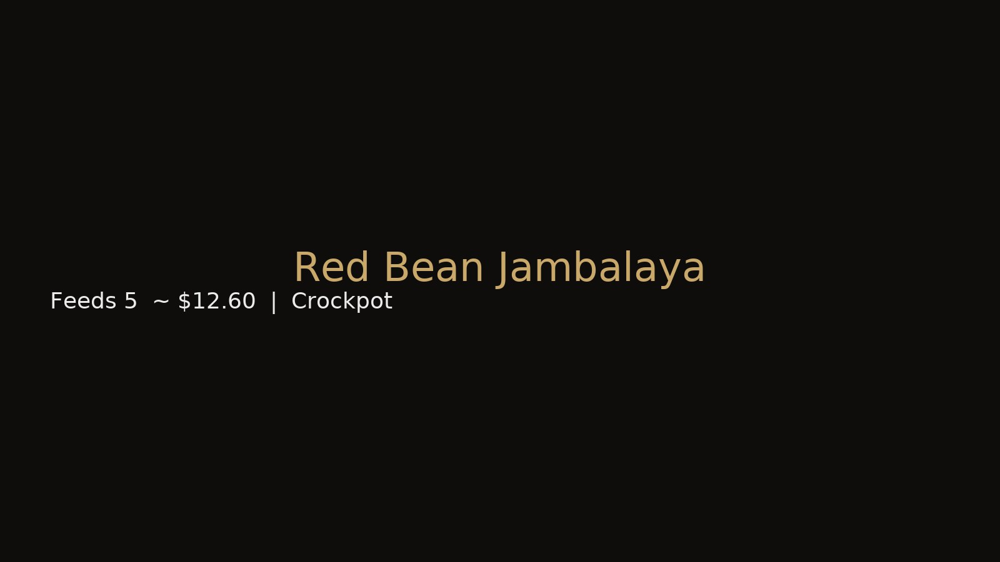

← Back to Recipes
Red Bean Jambalaya
Crockpot
Heat: Medium • Level 3/5
Smoky • Savory • Spicy
Serves 5 • Cost $12.60 • Prep 10 min • Cook 4 hrs (Low)

Ingredients
- 1 lb smoked sausage (sliced)
- 1 1/2 cups red beans (canned or soaked)
- 1 cup diced celery, onion, and bell pepper
- 1 cup rice
- 2 cups chicken broth
- 1 tsp paprika, 1/2 tsp cayenne, 1/2 tsp thyme
Directions — 3 Stages
1) Prep
- Rinse beans and slice sausage.
- Add beans, veggies, seasoning, rice, and broth to crockpot.
2) Cook
- Set on Low 4 hrs (or High 2 hrs). Stir once midway.
3) Finished
- Rice tender, beans soft, broth reduced to rich sauce. Serve hot.
Budget Tip
Swap sausage for smoked turkey to save a few dollars. Next day: add broth to make a rich Creole soup.
© 2025 Jeffrey Levels • Budget Soul Kitchen